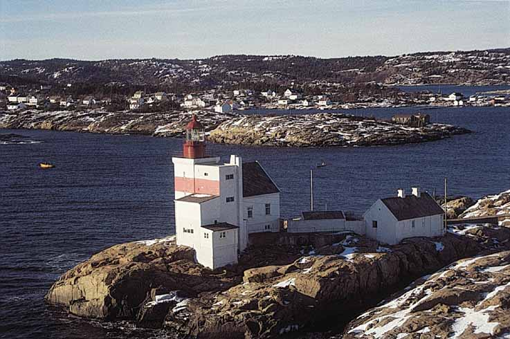
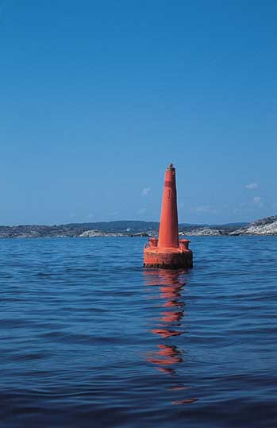

Sjømerkene - veivisere og kulturminner
Tekst og bilder: Roald Hanssen.
Samarbeidsprosjekt mellom Riksantikvaren, Kystverket og Aust-Agder fylkeskommune. Prosjektrapport foreligger som bok til salgs i Aust-Agder fylkeskommune.
Varde Store Kvalsholmen
Mange av oss som bor på Skagerrakkysten, har en forestilling om at selv om det er mye her i livet som følger forgjengelighetens lov, så er det også noe som står fast. Ett av disse stødige elementene er fyrstasjonene og de gamle faste dagmerkene, veivisere som har sikret skipslast og menneskeliv så lenge det har beveget seg fartøy her på kysten.
Fyrlykt Spaknesskjær
Sjømerkenes historie går langt tilbake i tid. Steinvarder er omtalt i vikingtida, og mye tyder på at det har eksistert en overordna merkestruktur i middelalderen. Men utbygginga av det omfattende sjømerkesystemet som vi kjenner i dag, foregikk særlig fra ca. 1850 og framover mot første verdenskrig. Norge skulle bygge opp egen infrastruktur etter løsrivelsen fra dansk administrasjon i 1814, og den livsviktige kysttrafikken skulle trygges og utvikles. Over 200 fyrstasjoner ble bygd, rundt 2000 lykter og lanterner etablert og nær 13000 dagmerker satt opp.
Varde Krossen
Noen få generasjoner senere har den elektroniske revolusjonen snudd opp-ned på våre forestillinger om sjømerkene. Fyrene automatiseres, og navigasjonen baseres i økende grad på satelitter og GPS. Vi må konstatere at en del sjømerker er bortimot avlegs, iallfall for den rene nyttetrafikk, mens de får ny status som historiske minner i kystlandskapet. Vernemyndighetene er på banen, for fyrstasjoner og fyrlykter, båker, varder og andre dagmerker er en helt sentral del av kystfolkets historie.
Homborsund fyr
I 1995 la Riksantikvaren fram en verneplan for fyrstasjonene. Automatisering og avbemanning av mange av stasjonene hadde ført til manglende vedlikehold, og det begynte å haste med å gjøre et utvalg av fyr som skulle vernes.
Jernstang Brekkestø
Riksantikvaren har ønsket å etablere en nasjonal vernestrategi for sjømerkene som helhet. I 1997 ble den første kulturhistoriske registreringa av alle typer sjømerker gjennomført her i Aust-Agder, et samarbeid mellom Riksantikvaren, Kystverket og fylkeskommunen. Erfaring fra ett fylke skulle være utgangspunkt for videre registrering og verneplanarbeid på landsbasis.
Lykt og søyle Grønnholmskjær
Feltarbeidet ble gjort sommeren 1997, og rapporten forelå i januar 1998. Deretter fulgte bokprosjektet ”Sjømerkene – veivisere og kulturminner”. Da de 8 fyrstasjonene i fylket allerede var registrert, handlet det denne gangen om 77 lykter og 398 dagmerker av svært ulike typer.
Varde Leiholmen
Sjømerkingas historie med utprøving av nye merketyper, nye materialer, energikilder etc. er i seg selv viktig. Farleiene som sjømerkene markerer, forteller en mer omfattende historie Sjømerkinga forteller om overgang fra seil til damp, fra tre til jern, fra dag- til nattseiling. De fleste gamle fartøyene er borte, men leia ligger der. Gjennom historien om sjømerkinga kan vi avlese næringsutvikling og bydannelser, og vi får innblikk i forsvarsstrategisk tankegang i tider da landet var trua av fiender.

Kart 1578
Landkjenningene følger sjøfarten på Agder fra de tidligste tider. Gjenkjennelige fjellformasjoner er gjengitt i hollandske losbøker og sjøkart fra 1500-tallet. Homborsunds fall, Imenessalen, Jomåsknutene og Hovdefjell kunne identifiseres mange mil ute i havet og var gode holdepunkter for skuter på vei mot havner i Aust-Agder. På dette kartet fra 1568 ser vi tydelig noen merker på Hesnesøya og på Merdø. Det ser ut til å være master og en slags båker. Tromøy kirke kalles Mardo kirke, fordi de utenlandske sjøfolkene på denne tida relaterer omgivelsene i dette området til uthavna Merdø.

Vignett Tromø Kirke
Hollandske kart og losbøker omtaler også en del markerte bygninger eller merker satt opp for navigering inn mot havnene. I losboka «De Kaert van der See» fra 1532 brukes Tromøy kirke som innseilingsmerke ved Arendal. Her rådes også en styrmann til å overettpeile to stenger på Gråholmen for å unngå «Kobbernaglen», en farlige grunne ved innseilinga til Hesnesøyene, og ved Lyngør omtales en varde med tønne.
Tegning Homborsund Mølle
Utover på 1700-tallet førte økende trafikk på «Nord-Europas viktigste handelsvei» til et behov for bedre kart og farvannsbeskrivelser. I 1790-åra ble Agderkysten trigonometrisk oppmålt, og Kaptein Groves nye sjøkart kom i 1801. Sjøkartdirektør, admiral og overlos for Danmark og Norge, Poul Løwenørn fikk utarbeidd en detaljert beskrivelse av kysten. Her finner vi beskrivelser av en rekke sjømerker, bl.a. vindmøller i Gamle Hellesund og på Homborøya.

Risørflekken
Risørflekken er også med i Løwenørns beskrivelse. Denne hvitkalka heinabben midt i Risør by har ifølge den første oversikten over «Fyre og Dagmærker» i 1839 en synsvidde på 4,5 mil. Risørflekken er trolig det eldste merket på Aust-Agderkysten i kontinuerlig bruk fram til i dag. Det skal ha vært hollandske sjøfolk som starta kalkinga av fjellet rett over havna. «Bleket» er dokumentert i skriftlige kilder i 1641, da den nye eieren av gården Randvik fikk kongens stadfestelse på eiendomshandelen, som forplikta ham til å holde «det kalkede Berg» vedlike. For det kunne han oppkreve avgifter av skip som ankom havna.
Tromøy kirke
I hele landet var det bare rundt 10 offentlige sjømerker i 1814. Under krigshandlingene i perioden 1807-14 ble etter kommanderende generals ordre alle fyr slukka og mange av losenes sjømerker fjerna for å hindre innseiling av engelske krigsskip. Både Risørflekken og Tromøy kirke ble endog malt sorte i et forsøk på å kamuflere disse viktige innseilingsmerkene for fiendtlige fartøyer. Men etter tradisjonen ble det også satt opp en del nye merker av mannskaper som lå og vakta på fiendtlige skip.
Tegning: Merkene 1825
Først i 1820-åra kom arbeidet med videre merking i gang, og i 1825 ble det for statens regning satt opp fire store landkjenningsmerker: Sandøes Mærke, Mærke ved Hesnes, Nødingens Mærke og Ulvesunds Mærke. Det var store trebåker som markerte innseilingene til gode uthavner. Prosjektet omfatta også Ryvingen Mærke i Lister og Mandals amt.
Varde Bonden - mot leia
Fyrdirektørembetet ble oppretta i 1841 og Oluf Arntzen konstituert som direktør. Nå ble det satt opp tre markante nye merker: Det ene var Bondens Mærke, en stor gulmalt varde på en holme utenfor Narestø
Arbeidstegning Homborøy Mølle
Det neste var Homborgsunds Mølle, opprinnelig en ordinær vindmølle på Homborøy, som var blitt brukt som seilingsmerke siden slutten av 1700-tallet. Den blåste ned i 1830, og en ny ”mølle” ble satt opp igjen som et rent sjømerke ca. 15 år etter.
Tegning Reierskjær
Reierskjær, «et Skjær utsat for de verste Bølgebrud», gikk stadig igjen i sakspapirene. I 1842 ble et kanonløp ble kjøpt inn fra Trondhjems Arsenal. Det veide 11 skippund (1753 kg) og arbeidsfolk fra Torungen fyranlegg satte det opp på skjæret. Regnskapet viste betenkelig høye utgifter, og fyrdirektøren kommenterte at i tillegg til arbeidslønn, båtleie, svovel og sand til gjenstøping av kanonmunningen, gikk det med en del penger til brennevin også, «da Søen ved den mindste Storkuling fra SW. gaar over Skjæret, og Folkene saaledes for at blive færdige ofte maatte sidde halve og hele Dagen vaade, har jeg ikke troet at burde nægte dem en ekstra Dram».
Lykt Reierskjær
16 år senere ble kanonløpet bytta ut med en støpejernsøyle, siden med en steinvarde i 1878, før en fyrlykt ble satt opp på et 10-beinet stativ i 1909, så høyt som teknisk mulig over frådende brenninger ved lille Reierskjær.

Store Torungen
Norges første fyr ble satt opp på Lindesnes i 1655. Det var et enkelt kullblussfyr som ble slukka året etter. Den videre fyrutbygginga gikk tregt og da den første norske fyrkommisjonen trådte sammen i 1828, var det ikke bygd mer enn 12 fyr. Ved opprettelsen av fyrdirektørembetet i 1841 ble det fart i utbygginga. Utover på 1900-tallet avtok aktiviteten, med Anda fyr i Nordland i 1932 som det siste bygd for bemanning. Det tok lang tid før Aust-Agder kom med. I 1832 sto Oksøy ferdig, og i 1839 ble Jomfruland tent. I 1838 hadde fyrinspektør Schive uttalt seg om nye fyranlegg mellom Jomfruland og Oksø. Det kongelige fyrkammer besluttet at det måtte bygges to fyr ved Arendal for å unngå forveksling med Oksøy og Jomfruland, som bare hadde ett lys. Dette var før blinkfyrenes tid.
Lille Torungen
Byggearbeidene på Store og Lille Torungen starta i 1843. Gårdbruker Gjeruld Terkielsen på Hiis gård solgte begge holmene til Staten. Materialet var teglstein, da steinen på øyene ikke egnet seg til bygging. Det gikk med 750.000 stein fra Berger teglsteinsfabrikk i Drammen. Linser og glass ble bestilt fra Fresnel i Frankrike, lyktene pluss alt smijern ble laget på Næs jernverk. Fyrene på Torungene ble tent i 1844, samtidig med et mindre innseilingsfyr på Sandvikodden.

Sandvikodden innseilingsfyr
I 1839 skrev en gruppe skipsredere til fyrmyndighetene og ba om et innseilingsfyr ved Galtesund. Fra 1840 til 1844 tok de bomavgift idet skutene passerte inn Galtesund. På disse åra ble det samlet inn 900 Spd. Dette skulle være startkapital for fyret. Staten eide en mulig tomt, nemlig den gamle bastionen på Sandvikodden. Fyrdirektøren antok ca. 1000 spd. overskudd på fyrprosjektet på Torungene, som kunne brukes på Sandvikodden. Fyrkommisjonen aksepterte til slutt et tredje fyr, og høsten 1844 ble alle tre fyrene tent.
Stangholmen fyr og lykt.
11 år senere ble det satt opp et innseilingsfyr på Stangholmen ved Risør. Stortingsmann Rolf Olsen engasjerte seg sterkt i saken, og i 1854 lovet Stortinget penger til fyret dersom grunn ble overdratt til fyrvesenet vederlagsfritt. Fyret, plassert i gavlen på fyrvokterens bolig, ble tent i 1855, og avbemannet litt over 100 år senere, da fyrvokter Halvdan Paulsen gikk av for aldersgrensa i 1959.
Lyngør fyr
Da Fyrvesenet planla å bygge nye kystfyr i 1870-åra, utviklet det seg en regulær kappestrid mellom Homborsund og Lyngør. Lokalbefolkningen brukte skipsforlis som argumentasjon for å få fyrstasjon. Lyngør-tilhengerne framholdt at det i perioden 1865-75 hadde vært 21 forlis mellom Jomfruland og fyrene på Torungene. Homborsund-forkjemperne slo tilbake med hele 45 forlis mellom Torungene og Oksøy fyr! Departementet bevilget «salomonisk» til begge.
Saltholmen fyr og lykt
På en holme ved innseilingen til Lillesand, der Hans Nilsen Hauge etter tradisjonen skal ha satt i gang saltutvinning i nødsåra 1809-14, fikk Lillesand sitt innseilingsfyr i 1882, etter et kappløp om bevilgningene med naboene i Grimstad. Fyrbygningen ble satt opp i betong, og fyrvokterboligen var så liten at det på dette fyret ble gjort unntak fra ordningen om at fyrvokteren skulle ha en ”fyrkarl” til hjelp. Stasjonen var i drift til 1952, da den ble solgt til den lokale seilforeningen.
Rivingen fyr og lykt
Mens Fyrvesenet hadde realisert det store prosjektet ved Homborsund i 1879, fikk ikke Grimstad gjennomslag for ønsket om innseilingsfyr. Saken verserte stadig i regjeringens utkast til statsbudsjett, men venstrefraksjonen under Johan Sverdrup blokkerte systematisk statsminister Selmers forslag til bevilgninger. Fyrdirektøren og lokale ildsjeler ble på denne måten bremset av en politisk dragkamp på Stortinget. Etter Sverdrups regjeringsovertagelse i 1884 skiftet stemningen. Bevilgning til fyret ble vedtatt enstemmig for 1885-86, og 8. september 1886 ble fyret tent.

Møkkalasset fyr
Tverrdalsøen Sømandsforening tok opp spørsmålet om et fyr på Ytre Møkkalasset, et stort skjær mellom Kilsund og Kalvesund. Bevilgningen kom i 1887-88, og det 15 meter høye støpejernstårnet ble plassert på en tre meter høy steinsokkel. På skjæret var det ikke plass til fyrvokterbolig, så denne ble bygd inne i Brårvika på Flostaøya, halvannen kilometer fra fyret. Fyret ble automatisert og avfolka i 1946, og i 1986 ble alt lys slukka, slik at tårnet i dag fungerer som et rent dagmerke.

Lille Skottholmen
På Lille Skottholmen i Galtesund sto det fra 1885 til 1904 et lite kommunalt innseilingsfyr i et ordinært «4-vinduers hus», der selve lampa var plassert i et karnapp på hushjørnet.
Søyle bergsøy vest
Fram til 1845 var bevilgningene til dagmerker og fyr slått sammen. Nå ble dagmerkene oppført som egen budsjettpost, og i 1863 kom den første rene merkefortegnelsen. Her ser vi de første tegn til statlig merking av indre lei. For Aust-Agder inneholder lista 20 nye merker: staker med kost, støpejernsøyler, varder og tremaster.
Kystbåten ved Eydehavn
Fra rundt 1850 kom det fart i dampskipstrafikken. Veksten hang sammen med utviklinga ellers i næringsliv og industri. Små private dampskipsselskap satsa optimistisk i alle sørlandsbyer, mens postrute mellom Oslo og Kristiansand hadde vært i gang fra 1827 med dampskipa Constitutionen og Prinds Carl. I denne perioden ser vi en rask tilvekst av sjømerker, fra 35 i 1870 til 295 i 1900, foruten 8 fyrstasjoner og 28 fyrlykter. Siden steg antallet merker bare svakt.
Varde Nestangen
Særlig i 1870- og 1880-åra økte antallet merker sterkt på hele norskekysten. Bevilgningene til Merkevesenet steg, og opptil 8 arbeidslag langs hele kysten satte opp og vedlikeholdt merkene. I denne perioden igangsatte også Havnevesenet vesentlige utbedringer av innseilinger og leier, f.eks. ved Lyngør, i Narestø, i Merdøgapet ved Arendal, i Smørsund og Homborsund ved Grimstad, og flere steder i Blindleia. Denne virksomheten gjenspeiles i tilveksten av varder, jernstenger og flytestaker i disse områdene.

Stake Pusnes
De første offentlige flytende merker ble lagt ut i Oslofjorden i 1818. På merkelista for 1863 finner vi 6 «Stager med kost» i vårt fylke. Stakene, som alle var hvitmalte, skulle rage 6-8 fot over vannet. På toppen skulle plasseres en kost eller en einerbusk, og en tilsynsmann skulle betales for å ha tilsyn med staken og ta den opp ved isgang. Etter 1863 økte antallet staker sterkt, og på merkelista 1877 finner vi 49 flytende merker i Aust-Agder.
Stake blyhella
I 1873 hadde overlos Riis foreslått en systematisk oppmerking av leiene, med én type merker om styrbord, en annen type om babord. Fyrdirektør Diriks kom til at et slikt system ikke kunne gjennomføres i Norge, der kystlei og innseilinger krysser hverandre i alle retninger. Men etter lang saksbehandling ble et nytt system satt ut i livet i 1878. Hvit stake med oppadvendt kost betegnet at grunnen lå nord eller øst for merket. Sort stake med nedadvendt kost eller uten kost, betegnet at grunnen lå sør eller vest for merket. Stake med hvite og sorte horisontale striper og med tverrspiler på toppen betegnet at det kunne seiles på begge sider.
Stakelager Humlesund
Et av Merkevesenets stakelager lå ved Humlesund utenfor Lillesand. Skader på flytende og faste merker ble reparert av merkelagene. Vind, sjø, strømforhold og hærverk kunne føre til skader. For trestakene var det spesielt viktig med tilsyn og vedlikehold. Disse var utsatt for strøm og uvær, og for skipstrafikk, og skulle fjernes når isen la seg. Stakene skulle legges ut mot leia, på minst 7 meters dybde hvis mulig, og fortøyes med en bunnstein og et lodd for å holde staken loddrett i vannet. Grove kjettinger ble brukt til bunnfortøyning. Merkevesenets arbeidsbåter skiftet ut stakene, slik at de lå ett år i sjøen og to år på land for å tørke og bli malt opp. Rundt 45 «kostebuer» for opplag av staker og bøyer ble satt opp langs hele kysten.
Stake Målen
Problemene knytta til «Farvandets Retning», som prega debatten om merkesystemet fra 1878, ble ikke løst. En komité nedsatt i 1900 foreslo å bruke røde staker til babord og sorte til styrbord. De ønska også å fastslå en hovedretning for kystleia: Skip som kom inn til kysten ved Lista og gikk østover, skulle ha sorte staker til styrbord og røde til babord. Så måtte en i tillegg utarbeide regler for merking av innseilingene til hver enkelt havn. Fra Jæren til svenskegrensa ble det nye systemet innført i 1914.
Stake Tvedestrand havn
I 1981 innførte Norge et merkesystem etter IALAs retningslinjer (International Association of Lighthouse Authorities). Leias hovedretning bestemmes sentralt, det brukes grønne staker til styrbord og røde til babord (lateralmerking). Inn til noen havner er det vanskelig å følge lateralsystemet konsekvent. Her brukes sorte/gule staker, eller sorte/røde, som markerer grunnene i forhold til himmelretningene (kardinalmerking). I tillegg brukes senterleimerker, merker for frittliggende grunner og spesialmerker. Fremdeles gjelder regelen om at hovedleia går fra Lista mot svenskegrensa.
Fyrlykt Vessøyhauet ved Grimstatd
Innføringa av den lille fyrlykta var en viktig begivenhet i Fyrvesenets historie. En slik lykt montert inne i en liten «kiosk» av tre eller støpejern var rimelig å sette opp, og en fisker kunne passe den. Allerede ved århundreskiftet sto det rundt 500 slike lykter på norskekysten. Av de 13 første lyktene som Stortinget bevilga penger til i 1883, ble tre satt opp ved Grimstad, såkalte «Gasolielamper» i små trebygninger, som skulle bedre navigeringa ved den vanskelige innseilinga til Groosefjorden og Grimstad havn.
Fyrlykt Merdø
I løpet av neste tiår etableres det fyrlykter flere steder ved Grimstad, på Lyfjell og Bukkevikskjær i Tromøysund og lenger øst ved Kilsund og Oksefjorden. Men trebuene var brennbare, og gassoljelampene sota og tok fyr. Etter en del branner i de utsatte trehusene, ble lykta på Merdø satt opp i 1894 som den første åttekanta «kiosken» av støpejern.
Fyrlys trehus Gitmertangen
Tilveksten av støpejernslykter var jevn framover mot 1914, da det sto 41 slike i Aust-Agder, mens bare fire trelykter var tilbake. I dag står den siste trelykta i fylket her på Gitmertangen, lengst øst på Tromøya.
Lysbøye Vestre Jentene
I 1901 ble det lagt ut klokkebøye på Pershausen øst for Risør. Senere kom det klokkebøyer på Måkegrunnen, Skjoldholmbåen og Vestre Jentene, alle i Høvåg. På Kårehausene ved Ulvøysund kom lydbøye med lys i 1917, og i 1939 kom en ny lys- og orgelbøye på Ytre Hausene i samme området. Noen av lydbøyene ble inndratt etter få år, andre ble etter hvert utstyrt med lys
Merker på Store Kvalsholmen
Den første rundtlysende acetylengasslanterna i Aust-Agder ble satt opp på en jernbåke ved Store Kvalsholmen utenfor Gamle Hellesund i 1920.
Krigsmerke Kjeholmen
Registreringa i 1997 avdekka rester av marinens gamle merkesystem. Merkene sees i dag som kraftige par jernstenger, satt opp som fundament for plater etter et bestemt mønster for gjenkjennelighet. Opprustinga fram mot 1905 var knytta til dragkampen om selvstendighet i unionen med Sverige. I denne spente perioden ble et merkesystem for marinen utreda av senere kontreadmiral Børresen. Ved mobilisering skulle vanlige sjømerker fjernes og noen få «krigsmerker» for marinen settes opp. Fyrlykter skulle slokkes, og bygningene males med kamufleringsfarge
Krigsmerkekart Grimstad
Krigsmerkene var delt i sommermerker og vintermerker. Sommermerkene skulle males på fjellet eller på eksisterende røyser eller varder, mens vintermerkene var trelemmer satt opp på jernstenger og malt hvite eller røde. Kart og merkelister ble utarbeidd. Mobiliseringsplaner og arbeid med merkene skulle holdes strengt hemmelig, med særskilte krigsmerkeformenn i distriktene.

Krigsmerke Bergsøya
Under krigen 1914-18 ble det ikke behov for å mobilisere, men merkelistene fikk en passus om at en ved mobilisering måtte være forberedt på at fyr eller lamper kunne være slukka, og merker fjerna. Så sent som i 1938 er krigsmerkesystemet del av mobiliseringsplanen for Agderkysten. Merkesystemet ble ikke aktivert i aprildagene 1940, og ble nedlagt like etter krigen. Siden er fundamentstengene ikke vedlikeholdt på noen måte, og de som står nærmest sjøen er svært korroderte. De andre har holdt seg imponerende godt på grunn av god jernkvalitet.

Tegning faste dagmerker
Kulturlandskapet i Aust-Agders ytterste kystområder preges av farleiene. Helt ut mot havet gir den enkle merkingen av ytre kystlei nødvendig navigasjonshjelp til større fartøy på vei mot industrihavnene. Her brukes fyr, lykter og lanterner på de ytterste holmene, og store bøyestaker, noen med lysforsterkning. Indre kystlei, der mindre fartøyer har frakta passasjerer, post og smålast til hver minste havn, snor seg gjennom et tettere kystlandskap. Farvannet er uryddig, og innseilingene til havnene er trange med behov for tett merking. Derfor er det satt opp et stort antall merker som varierer sterkt både i alder, form og materialbruk.

Trebåke Stangholmen øst
I dag vedlikeholder Kystverket ca. 360 dagmerker på Aust-Agderkysten, men det finnes også private merker av mange slag utenfor selve kystleia. I tillegg vil interesserte båtfarende finne nedlagte merker og ruiner av tidligere merker. Registreringa sommeren 1997 omfatta ikke de mange gravrøysene ute i havbrynet, unntatt der det i dag er plassert offentlig seilmerke direkte på røysa.
Jernstang Kavringen
Jernstengene er de vanligste sjømerkene på Aust-Agderkysten. De rager 4-5 meter over vannflata og har ofte en viser eller en ”krekse” som toppmerke for å vise riktig seilløp. (krekse: toppmerke av to tregrinder i kors, betegnelse fra Sunnmøre). Et slikt toppmerke sees fra alle kanter. Stenger plassert utakjærs står oftest «nakne», fordi bølgeslag vil rive ned enhver toppmerking. Disse merkene er utsatt både for bølgeslag og isgang. I noen tilfelle løftes de opp av isen vinterstid, for så å bli funnet på bunnen neste vår. En del jernstenger er blitt påkjørt av båter, fordi de vises dårlig på radar, og i det siste er det montert radarreflektor på mange av stengene.

Jernstang montering
Jernstengene er oftest plassert på høyeste punkt på en undervannsbåe eller på et skvalpeskjær. Da merkelagene i 1920-åra fikk ”anleggsstoler”, ble det mulig å bore på inntil 4 meters dybde. Slik kunne stengene plasseres ut fra båen og nærmere leia. Anleggsstolen var et stativ som kunne settes sammen oppå båen, med en arbeidsplattform på toppen. Boringen foregikk på den tiden med håndkraft, og det ble brukt bor i full bredde, altså 6 tommer! Tre mann jobbet sammen, idet to slo med feisler og en håndterte boret. Da merkelagene oftest besto av 8 mann, var dette tunge arbeidet basert på jevnlig avløsning og hvile. Boret måtte skiftes ut etter 600-1500 slag.
Søyle Juska
Bare et fåtall er tilbake av et større antall støpejernsøyler. Søylene er tykkere og bedre synlig enn de tynne jernstengene. Av praktiske grunner er de vanskelige å montere under vann, så slike merker står oftest på tørt land eller på skvalpeskjær, ofte på sterkt utsatte steder i bølgeslagsonen, og det er imponerende hvor godt de har stått mot korrosjon, sjø- og isgang.

Søyle Kjerringfoten
De fleste av søylene er like i utforming og trolig støpt på samme jernverk. Næs Jernverk leverte ulike typer jernprodukter til Fyrvesenet, og kan også ha støpt denne slike søyler. Søylene er rundt 3 meter høye, ca. 30 cm i diameter ved foten og smalner mot kula i toppen. Øverst kan det være montert en viser eller en ”krekse”.
Mast Askerøystangholmen
Ved noen av de gamle innseilingene står fremdeles den gamle mastetypen, ”Stang med Tværtræ” eller ”Stang med Tønde”. Fremdeles har de et kors, et ”tverrtre” eller en tønne som toppmerke. Dette er en merketype som trolig var svært mye brukt før fyrvesenets tid, da losene hadde hovedansvaret sjømerkinga. I flere tilfelle er mastene plassert på store rullesteinsrøyser som opprinnelig kan ha vært gravrøyser

Mast med tønne Homborøy øst
I gamle losbeskrivelser omtales en rekke master, for eksempel ved innseilinga til uthavna på Hesnesøya. Flere master er i nyere tid erstatta av andre, mer synlige og ”moderne” merker, slik som her ved innseilinga til Homborsund, der tre master ble erstatta av et stort kystfyr i 1879. To av de tre mastene ble likevel ikke fjerna.
Varde Lille Snerte
Vardene er blant de mest maleriske sjømerkene. De blir ofte kalt ”steinkjerringer” fordi de i formen kan minne om en gammeldags stakk, og flere har lokale kjælenavn. De eldste vardene er satt opp av utsprengte stein uten mørtel som bindemiddel, dersom de er plassert i trygg høyde eller avstand fra flomål og bølgeslag. Både i form og størrelse kan de variere, selv om Merkevesenets «standard» var en kjegle på opptil 5 meters høyde. Der vardene skal vise selve løpet i leia, er de forsynt med en jernstang og viser på toppen.

Varde Brenningene
De fleste av vardene ble bygd av Merkevesenet i perioden 1874-1930, og oftest så nær sjøen at en måtte regne med harde påkjenninger i uvær. Derfor ble de murt opp av stein med sementmørtel som bindemiddel. På lave og utsatte skjær helt ute i havbrynet ser vi merker etter stadige reparasjoner, der armert betong erstatter tidligere byggeteknikk.
Varde Bjørka
Der det var muligheter for det, ble steinen tatt ut på stedet. En kan finne små steinbrudd nær varden, borehull og merker etter kiler, og stein som er blitt til overs. De fleste av vardene er satt opp etter utviklinga av dynamitt i 1860-åra, men trolig ble det meste av steinen tatt ut med håndkraft: kiler og slegge. Vardene ble opprinnelig tjæra og kalka i bestemte mønstre for gjenkjennelighet, og fremdeles kan en varde identifiseres på malingmønsteret i sorte og hvite felt.
Trebåke Hesnes Merke
Best kjent av alle dagmerker på kysten vår er de fem store trebåkene som staten satte opp i 1825 (Sandøya, Hesnesøyene, Nødingen utenfor Brekkestø, Ulvøya og Ryvingen ved Mandal). I sakspapirene blir merkene kalt ”Anduvningsmerker” (holl. andoen = kjenne). De var landkjenningsmerker for viktige uthavner, de skulle kunne oppdages langt ute i havet, og de ble utformet forskjellige for å unngå forvekslinger. Merket ved Hesnes skulle ha en synsvidde på 1,5 norske mil. Alle disse merkene er fremdeles del av Kystverkets merkesystem, etter 180 år.

Kanon Narestø
På et undervannsskjær i Narestø havn står denne kanonen. Den er med på merkelista i 1872, og bakgrunnen for hvorfor og hvordan denne kanonen ble plassert her, er ikke kjent. Den ble satt opp samme år som Havnevesenet avsluttet sitt store arbeid med moloen i Narestø. Kanonen står på ca. en meters dyp, er 2.2 m lang fra foten nede på skjæret til munningen, og måler 33 cm i ytre diameter ved munningen. Kanonen har vært brukt både til å vise skjæret og som fortøyningsanordning.
Hvit flekk Daumannen
”Bleket” eller Risørflekken er ikke det eneste eksempel i Aust-Agder på at en hvitmalt flekk på fjellet fungerer som sjømerke. Mindre flekker til hjelp for navigeringen finner vi både i Tvedestrand, Arendal, Grimstad og Lillesand. En liten flekk på Steinsøya ved Lyngør går under navnet ”Daumannen”, og den er en god hjelp for lokale fiskere på vei hjemover i høstskumringen.
Hvit flekk Vestre Svertingen
På toppen av Vestre Svertingen i Grimstad, ved en av de eldste innseilingene til byen, står et merke som skal identifisere innseilingen. Det består av tre jernstenger påsatt ”ballonger”. Selve løpet mellom Svertinggapet markeres av hvitmalte flekker både her på og på Østre Svertingen.

Duc d'Albe Ulvøysund
Jernbåkene eller ”trebeiningene” har vært en mye brukt konstruksjon i Fyr-og Merkevesenet. Slike merker har også blitt kalt duc d’alber. Flere skrå stenger festes i bunnen, og gir bedre stabilitet enn en enkel stang. Betegnelsen duc d’albe skal etter tradisjonen ha sin opprinnelse fra den 1500-tallet, da den spanske hertugen av Alba ble sendt til kolonien Nederlandene for å tukte frihetsbevegelsen der. Det gjorde han visstnok så grundig og brutalt at han ble hatet av et helt folk. I Nederland er et utall slike konstruksjoner av tømmer plassert langs kanaler og i havnene. Betegnelsen var ment spottende, og alle nederlendere som festa fortøyningstauet rundt en duc d’albe, tenkte seg at det var halsen til hertugen de stramma tauet rundt!

Fyrlykt Gråviktangen
For sjømerker som for de fleste andre kulturminner gjelder hovedregelen om at den beste bevaring er gjennom bruk. For Aust-Agderkystens del viser Kystverket i dag vilje til å ta godt vare på samtlige merker, også de gamle båkene og vardene som har utspilt sin viktige rolle for den rene nyttetrafikk. De siste åra har Kystverket prøvd å tilpasse ny teknologi til eksisterende fyrlykter. Lykter og lanterner er blitt utstyrt med solcellepanel. Det er viktig at en ved utforming og plassering av panelene tar estetiske hensyn ved siden av de rent praktiske.
Båke Nødingen
Kystverket må i dag også forholde seg til en bevisst kystbefolknings ønsker. Ved et par tilfelle har Kystverket erstatta gamle, tradisjonsrike merker med enklere, standardiserte merker, men har valgt å bøye seg for lokalbefolkningens sterke ønsker om å få tilbake det opprinnelige merket. Kanskje det er sjømerkenes karakter av det tidløse, og den sterke symbolikken, som engasjerer og griper. For kystens folk er sjømerkene grunnlaget for trygg seilas, og det er nok ingen tilfeldighet at mange av merkene fremdeles er preget av det kristne korssymbolet, med røtter tilbake til sjømerkene i middelalderen.